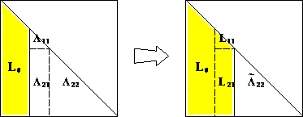

Cholesky Factorization
Packages
Cholesky decomposition
In the normal equations for linear regression \[ \mathbf{X}^T \mathbf{X} \beta = \mathbf{X}^T \mathbf{y}, \]
the coefficient matrix \(\mathbf{X}^T \mathbf{X}\) is symmetric and positive semidefinite. How to exploit this structure?
Theorem: Let \(\mathbf{A} \in \mathbb{R}^{n \times n}\) be symmetric and positive definite. Then \(\mathbf{A} = \mathbf{L} \mathbf{L}^T\), where \(\mathbf{L}\) is lower triangular with positive diagonal entries and is unique.
Positive definite:
- Eigenvalues of \(\mathbf{A}\) are all positive
- The quadratic form \(\mathbf{x}^\top \mathbf{A} \mathbf{x} > 0\).
- The matrix \(\mathbf{A}\) defines an inner product.
Proof (by induction):
If \(n=1\), then \(\ell = \sqrt{a}\). For \(n>1\), the block equation
\[\begin{eqnarray*} \begin{pmatrix} a_{11} & \mathbf{a}^T \\ \mathbf{a} & \mathbf{A}_{22} \end{pmatrix} = \begin{pmatrix} \ell_{11} & \mathbf{0}_{n-1}^T \\ \mathbf{l} & \mathbf{L}_{22} \end{pmatrix} \begin{pmatrix} \ell_{11} & \mathbf{l}^T \\ \mathbf{0}_{n-1} & \mathbf{L}_{22}^T \end{pmatrix} \end{eqnarray*}\]
has solution
\[\begin{eqnarray*} \ell_{11} &=& \sqrt{a_{11}} \\ \mathbf{l} &=& \ell_{11}^{-1} \mathbf{a} \\ \mathbf{L}_{22} \mathbf{L}_{22}^T &=& \mathbf{A}_{22} - \mathbf{l} \mathbf{l}^T = \mathbf{A}_{22} - a_{11}^{-1} \mathbf{a} \mathbf{a}^T. \end{eqnarray*}\]
Now \(a_{11}>0\) (why?), so \(\ell_{11}\) and \(\mathbf{l}\) are uniquely determined. \(\mathbf{A}_{22} - a_{11}^{-1} \mathbf{a} \mathbf{a}^T\) is positive definite because \(\mathbf{A}\) is positive definite (why?). By induction hypothesis, \(\mathbf{L}_{22}\) exists and is unique.
The Sherman-Morrison formula, Woodbury formula, and Schur complement are useful in
- proving certain structured matrices are invertible, and
- reducing the complexity of solving certain linear systems.
The constructive proof completely specifies the algorithm:

Complexity
\[ \frac{1}{2} [2(n-1)^2 + 2(n-2)^2 + \cdots + 2 \cdot 1^2] \approx \frac{1}{3} n^3 \quad \text{flops} \]
- Half the cost of LU decomposition by taking advantage of symmetry.
- In general Cholesky decomposition is very stable. Failure of the decomposition usually means \(\mathbf{A}\) is not positive definite. It is an efficient way to test positive definiteness.
Leading order behavior comes from cost of setting up \(\mathbf{L}_{22}\) block in recursive application of the algorithm.
Applications
No inversion mentality: Whenever we see matrix inverse, we should think in terms of solving linear equations. If the matrix is positive (semi)definite, use Cholesky decomposition, which is twice cheaper than LU decomposition.
Determinant
We should use Cholesky when computing \(\operatorname{det}(\mathbf{A})\) or \(\log \operatorname{det}(\mathbf{A})\), where \(\mathbf{A}\) is positive definite.
Why?
Cholesky{Float64, Matrix{Float64}}
U factor:
10×10 UpperTriangular{Float64, Matrix{Float64}}:
2.18467 -0.414172 0.272859 … 0.202552 -0.0499165 -0.0132588
⋅ 2.25621 0.202463 -0.251534 -0.986729 -0.102584
⋅ ⋅ 2.1899 -0.254341 0.38065 0.165396
⋅ ⋅ ⋅ 0.0115638 0.796192 -0.0933747
⋅ ⋅ ⋅ -0.195477 -0.651152 -0.621002
⋅ ⋅ ⋅ … -0.127859 0.407961 -0.00438336
⋅ ⋅ ⋅ 0.0861334 0.0554507 0.107169
⋅ ⋅ ⋅ 1.92583 -0.499712 0.0585119
⋅ ⋅ ⋅ ⋅ 1.65247 -0.290976
⋅ ⋅ ⋅ ⋅ ⋅ 2.0207110×10 LowerTriangular{Float64, Matrix{Float64}}:
2.18467 ⋅ ⋅ … ⋅ ⋅ ⋅
-0.414172 2.25621 ⋅ ⋅ ⋅ ⋅
0.272859 0.202463 2.1899 ⋅ ⋅ ⋅
0.280832 0.287005 0.27394 ⋅ ⋅ ⋅
0.0309988 -0.384709 0.204741 ⋅ ⋅ ⋅
-0.47431 -0.231527 -0.60212 … ⋅ ⋅ ⋅
0.0744165 -0.184684 0.114765 ⋅ ⋅ ⋅
0.202552 -0.251534 -0.254341 1.92583 ⋅ ⋅
-0.0499165 -0.986729 0.38065 -0.499712 1.65247 ⋅
-0.0132588 -0.102584 0.165396 0.0585119 -0.290976 2.02071Multivariate normal density
Multivariate normal density \(\text{MVN}(0, \Sigma)\), where \(\Sigma \in \mathbb{R}^{n \times n}_{++}\) is postive definite, is \[ \, - \frac{n}{2} \log (2\pi) - \frac{1}{2} \log \det \Sigma - \frac{1}{2} \mathbf{y}^T \Sigma^{-1} \mathbf{y}. \]
How can we evaluate this density?
Method 1:
- compute explicit inverse \(\Sigma^{-1}\) (\(2n^3\) flops),
- compute quadratic form (\(2n^2 + 2n\) flops), and finally
- compute determinant (\(2n^3/3\) flops).
Method 2:
- Cholesky decomposition \(\Sigma = \mathbf{L} \mathbf{L}^T\) (\(n^3/3\) flops),
- Solve \(\mathbf{L} \mathbf{x} = \mathbf{y}\) by forward substitutions (\(n^2\) flops),
- compute quadratic form \(\mathbf{x}^T \mathbf{x}\) (\(2n\) flops), and
- compute determinant from Cholesky factor (\(n\) flops).
Which method is better?
# this is a person w/o numerical analysis training
function logpdf_mvn_1(y::Vector, Σ::Matrix)
n = length(y)
- (n//2) * log(2π) - (1//2) * logdet(Symmetric(Σ)) - (1//2) * transpose(y) * inv(Σ) * y
end
# this is a computing-savvy person
function logpdf_mvn_2(y::Vector, Σ::Matrix)
n = length(y)
Σchol = cholesky(Symmetric(Σ))
- (n//2) * log(2π) - (1//2) * logdet(Σchol) - (1//2) * abs2(norm(Σchol.L \ y))
end
# better memory efficiency - input Σ is overwritten
function logpdf_mvn_3(y::Vector, Σ::Matrix)
n = length(y)
Σchol = cholesky!(Symmetric(Σ)) # Σ is overwritten
- (n//2) * log(2π) - (1//2) * logdet(Σchol) - (1//2) * dot(y, Σchol \ y)
endlogpdf_mvn_3 (generic function with 1 method)Random.seed!(206) # seed
n = 1000
# a pd matrix
Σ = convert(Matrix{Float64}, Symmetric([i * (n - j + 1) for i in 1:n, j in 1:n]))
y = rand(MvNormal(Σ)) # one random sample from N(0, Σ)
# at least they should give the same answer
@show logpdf_mvn_1(y, Σ)
@show logpdf_mvn_2(y, Σ)
Σc = copy(Σ)
@show logpdf_mvn_3(y, Σc);logpdf_mvn_1(y, Σ) = -4856.618941340982
logpdf_mvn_2(y, Σ) = -4856.618941341076
logpdf_mvn_3(y, Σc) = -4856.618941341076BenchmarkTools.Trial: 85 samples with 1 evaluation per sample. Range (min … max): 57.488 ms … 90.611 ms ┊ GC (min … max): 0.00% … 2.91% Time (median): 58.529 ms ┊ GC (median): 1.44% Time (mean ± σ): 59.472 ms ± 4.672 ms ┊ GC (mean ± σ): 1.55% ± 1.32% ▇ █ ▁ █▆█▁█▄▃▃▁▁▁▃▃▁▁▁▁▁▁▁▁▁▁▁▁▁▁▁▃▁▁▁▁▁▁▁▁▁▁▁▁▁▁▁▁▁▁▁▁▁▁▁▁▁▁▁▁▁▃ ▁ 57.5 ms Histogram: frequency by time 83.9 ms < Memory estimate: 16.34 MiB, allocs estimate: 23.
BenchmarkTools.Trial: 424 samples with 1 evaluation per sample. Range (min … max): 8.770 ms … 128.872 ms ┊ GC (min … max): 0.00% … 91.99% Time (median): 9.263 ms ┊ GC (median): 0.00% Time (mean ± σ): 11.810 ms ± 13.798 ms ┊ GC (mean ± σ): 20.20% ± 15.76% █▂▁ ████▆▁▄▁▅▅▄▁▄▁▁▁▁▁▁▁▁▁▁▁▁▁▁▁▁▁▁▁▁▁▁▁▁▁▁▁▁▁▁▁▁▁▁▁▁▁▁▁▁▁▁▁▁▁▁▅ ▆ 8.77 ms Histogram: log(frequency) by time 121 ms < Memory estimate: 15.32 MiB, allocs estimate: 9.
BenchmarkTools.Trial: 608 samples with 1 evaluation per sample. Range (min … max): 7.951 ms … 9.110 ms ┊ GC (min … max): 0.00% … 0.00% Time (median): 8.057 ms ┊ GC (median): 0.00% Time (mean ± σ): 8.098 ms ± 143.338 μs ┊ GC (mean ± σ): 0.00% ± 0.00% █▄ ▇██▆▇▆▅▄▄▄▄▃▄▅▄▄▄▃▃▃▄▄▄▃▅▄▃▅▄▃▄▃▄▃▃▄▄▃▃▃▃▃▄▃▂▃▂▂▂▃▂▂▂▁▂▁▁▃▂ ▃ 7.95 ms Histogram: frequency by time 8.48 ms < Memory estimate: 8.06 KiB, allocs estimate: 3.
To evaluate the same multivariate normal density at many observations \(y_1, y_2, \ldots\), we pre-compute the Cholesky decomposition (\(n^3/3\) flops), then each evaluation only costs \(n^2\) flops.
Linear regression
Cholesky decomposition is one approach to solve linear regression
\[
\widehat{\boldsymbol{\beta}} = (\mathbf{X}^T \mathbf{X})^{-1} \mathbf{X}^T \mathbf{y}.
\]
Assume \(\mathbf{X} \in \mathbb{R}^{n \times p}\) and \(\mathbf{y} \in \mathbb{R}^n\).
- Compute \(\mathbf{X}^T \mathbf{X}\): \(np^2\) flops
- Compute \(\mathbf{X}^T \mathbf{y}\): \(2np\) flops
- Cholesky decomposition of \(\mathbf{X}^T \mathbf{X}\): \(\frac{1}{3} p^3\) flops
- Solve normal equation \(\mathbf{X}^T \mathbf{X} \beta = \mathbf{X}^T \mathbf{y}\): \(2p^2\) flops
- If need standard errors, another \((4/3)p^3\) flops
- Total computational cost is \(np^2 + (1/3) p^3\) (without s.e.) or \(np^2 + (5/3) p^3\) (with s.e.) flops.